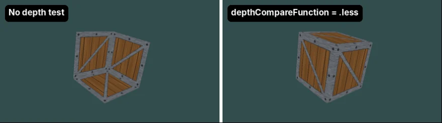

Per iniziare
Sistemi di coordinate#
examples/Sources/06-CoordinateSystems, si esegue con swift run CoordinateSystems. Scarica tutti gli esempi oppure guarda come eseguirli.Nel suo viaggio verso lo schermo un vertice attraversa diversi sistemi di coordinate.
Dividere il viaggio in tappe rende semplice ognuna di esse, e tre matrici portano il vertice da una tappa alla successiva.
Alla fine di questo capitolo avremo un vero 3D: una vista prospettica di cubi con texture e con la profondità corretta.
Gli spazi#
- Spazio locale (object space): coordinate relative all'origine dell'oggetto stesso, così come sono salvate nel vertex buffer.
- Spazio mondo (world space): dove l'oggetto si trova nella scena.
La matrice model porta dal locale al mondo. - Spazio vista (view space, o spazio camera): il mondo visto dalla camera, con la camera nell'origine.
La matrice view porta dal mondo alla vista. - Clip space: l'uscita della vertex function.
La matrice di proiezione porta dalla vista al clip space. - Normalized device coordinates (NDC): la GPU divide x, y e z del clip space per w (la divisione prospettica).
- Coordinate di viewport: le NDC trasformate in pixel.
Le tappe da 2 a 4 le scrivi tu, in una sola riga dello shader:
out.position = uniforms.projection * uniforms.view * uniforms.model * float4(in.position, 1.0);
Le convenzioni di Metal#
- In NDC x e y vanno da -1 a 1 con y verso l'alto.
La z va da 0 a 1. - Le coordinate in pixel e le coordinate di texture partono in alto a sinistra, con y verso il basso.
Se vieni da OpenGL
In OpenGL la z delle NDC va da -1 a 1.
Una matrice di proiezione copiata da un tutorial di OpenGL mette metà del tuo intervallo di profondità davanti al near plane, e la geometria vicina alla camera sparisce.
Usa sempre una matrice di proiezione costruita per una profondità da 0 a 1, come quella qui sotto.
A Metal non importa se il tuo mondo è sinistrorso o destrorso: lo decidono soltanto le tue matrici.
Questa serie usa un mondo destrorso, come la maggior parte dei tutorial e dei programmi di modellazione: +x a destra, +y in alto, e la camera guarda lungo -z.
Proiezione prospettica#
Una proiezione prospettica rende più piccole le cose lontane.
È definita da un campo visivo verticale, dal rapporto d'aspetto della vista e da un near plane e un far plane; insieme delimitano un tronco di piramide chiamato frustum.
Aggiungi a Math.swift:
extension float4x4 {
/// Right-handed perspective projection with a 0...1 depth range.
init(perspectiveFov fovY: Float, aspect: Float, near: Float, far: Float) {
let y = 1 / tan(fovY * 0.5)
let x = y / aspect
let z = far / (near - far)
self.init(columns: (
SIMD4<Float>(x, 0, 0, 0),
SIMD4<Float>(0, y, 0, 0),
SIMD4<Float>(0, 0, z, -1),
SIMD4<Float>(0, 0, z * near, 0)))
}
}
/// Right-handed perspective projection with a 0...1 depth range.
inline simd::float4x4 perspective(float fovY, float aspect, float near, float far) {
float y = 1.0f / std::tan(fovY * 0.5f);
float x = y / aspect;
float z = far / (near - far);
return simd_matrix(simd_make_float4(x, 0, 0, 0),
simd_make_float4(0, y, 0, 0),
simd_make_float4(0, 0, z, -1),
simd_make_float4(0, 0, z * near, 0));
}
Il -1 copia in w la z dello spazio vista cambiata di segno.
Dopo la divisione prospettica tutto risulta diviso per la propria distanza dalla camera, che è esattamente ciò che la prospettiva è. Tieni il near plane il più lontano possibile (0.1 è un valore tipico).
La precisione della profondità si concentra vicino al near plane, e un valore minuscolo come 0.0001 la spreca quasi tutta.
Una proiezione ortografica, che non ha prospettiva, compare nel capitolo Shadow mapping.
Model, view, projection#
struct Uniforms {
var model: float4x4
var view: float4x4
var projection: float4x4
}
struct Uniforms {
simd::float4x4 model;
simd::float4x4 view;
simd::float4x4 projection;
};
var aspect: Float = 1
func mtkView(_ view: MTKView, drawableSizeWillChange size: CGSize) {
aspect = Float(size.width / size.height)
}
float aspect = 1.0f; // member of Renderer
void Renderer::resize(int width, int height) {
aspect = float(width) / float(height);
}
let model = float4x4(rotation: time, axis: [0.5, 1, 0])
let viewMatrix = float4x4(translation: [0, 0, -3])
let projection = float4x4(perspectiveFov: 45.radians, aspect: aspect, near: 0.1, far: 100)
var uniforms = Uniforms(model: model, view: viewMatrix, projection: projection)
simd::float4x4 model = rotation(time, simd::float3{0.5f, 1, 0});
simd::float4x4 viewMatrix = translation(simd::float3{0, 0, -3});
simd::float4x4 projection = perspective(radians(45), aspect, 0.1f, 100.0f);
Uniforms uniforms{ model, viewMatrix, projection };
La matrice view allontana tutto il mondo di 3 unità lungo -z.
Spostare indietro il mondo e spostare avanti la camera sono la stessa cosa.
Un cubo#
Un rettangolo piatto è una povera demo 3D.
Da adesso usiamo una vera struct per i vertici e generiamo un cubo nel codice.
Ogni vertice ha una posizione, una normale (la direzione verso cui guarda la superficie, che servirà presto per l'illuminazione) e una coordinata di texture:
struct Vertex {
var position: Float3
var normal: Float3
var uv: SIMD2<Float>
}
func makeCube() -> [Vertex] {
// normal, right and up direction of each face
let faces: [(Float3, Float3, Float3)] = [
([ 0, 0, 1], [ 1, 0, 0], [0, 1, 0]), // front
([ 0, 0, -1], [-1, 0, 0], [0, 1, 0]), // back
([ 1, 0, 0], [ 0, 0, -1], [0, 1, 0]), // right
([-1, 0, 0], [ 0, 0, 1], [0, 1, 0]), // left
([ 0, 1, 0], [ 1, 0, 0], [0, 0, -1]), // top
([ 0, -1, 0], [ 1, 0, 0], [0, 0, 1]), // bottom
]
let corners: [SIMD2<Float>] = [[-1, -1], [1, -1], [1, 1], [-1, -1], [1, 1], [-1, 1]]
var vertices: [Vertex] = []
for (normal, right, up) in faces {
for c in corners {
let position = (normal + right * c.x + up * c.y) * 0.5
let uv = SIMD2<Float>(c.x * 0.5 + 0.5, 0.5 - c.y * 0.5)
vertices.append(Vertex(position: position, normal: normal, uv: uv))
}
}
return vertices
}
#include <vector>
struct Vertex {
simd::float3 position;
simd::float3 normal;
simd::float2 uv;
};
std::vector<Vertex> makeCube() {
struct Face { simd::float3 normal, right, up; };
const Face faces[] = {
{{ 0, 0, 1}, { 1, 0, 0}, {0, 1, 0}}, // front
{{ 0, 0, -1}, {-1, 0, 0}, {0, 1, 0}}, // back
{{ 1, 0, 0}, { 0, 0, -1}, {0, 1, 0}}, // right
{{-1, 0, 0}, { 0, 0, 1}, {0, 1, 0}}, // left
{{ 0, 1, 0}, { 1, 0, 0}, {0, 0, -1}}, // top
{{ 0, -1, 0}, { 1, 0, 0}, {0, 0, 1}}, // bottom
};
const simd::float2 corners[] = {{-1, -1}, {1, -1}, {1, 1}, {-1, -1}, {1, 1}, {-1, 1}};
std::vector<Vertex> vertices;
for (const Face& face : faces) {
for (simd::float2 c : corners) {
simd::float3 position = (face.normal + face.right * c.x + face.up * c.y) * 0.5f;
simd::float2 uv = {c.x * 0.5f + 0.5f, 0.5f - c.y * 0.5f};
vertices.push_back({position, face.normal, uv});
}
}
return vertices;
}
Sono 36 vertici per un cubo largo un'unità, ordinati in senso antiorario se visti da fuori.
Costruisci il vertex descriptor a partire dalla struct stessa, così gli offset non possono mai essere sbagliati:
vertexDescriptor.attributes[0].format = .float3
vertexDescriptor.attributes[0].offset = MemoryLayout<Vertex>.offset(of: \.position)!
vertexDescriptor.attributes[1].format = .float3
vertexDescriptor.attributes[1].offset = MemoryLayout<Vertex>.offset(of: \.normal)!
vertexDescriptor.attributes[2].format = .float2
vertexDescriptor.attributes[2].offset = MemoryLayout<Vertex>.offset(of: \.uv)!
vertexDescriptor.layouts[0].stride = MemoryLayout<Vertex>.stride
vertexDescriptor->attributes()->object(0)->setFormat(MTL::VertexFormatFloat3);
vertexDescriptor->attributes()->object(0)->setOffset(offsetof(Vertex, position));
vertexDescriptor->attributes()->object(1)->setFormat(MTL::VertexFormatFloat3);
vertexDescriptor->attributes()->object(1)->setOffset(offsetof(Vertex, normal));
vertexDescriptor->attributes()->object(2)->setFormat(MTL::VertexFormatFloat2);
vertexDescriptor->attributes()->object(2)->setOffset(offsetof(Vertex, uv));
vertexDescriptor->layouts()->object(0)->setStride(sizeof(Vertex));
Tutti e tre gli attributi usano bufferIndex 0, il valore predefinito.
Poiché SIMD3<Float> occupa 16 byte, gli offset sono 0, 16 e 32 e lo stride è 48.
Nello shader:
struct VertexIn {
float3 position [[attribute(0)]];
float3 normal [[attribute(1)]];
float2 uv [[attribute(2)]];
};
Disegna con vertexCount: 36.
Il depth buffer#
Eseguilo e il cubo sembra rivoltato: le facce disegnate dopo coprono quelle disegnate prima, a prescindere da quale sia più vicina.
La soluzione è un depth buffer, una texture che per ogni pixel conserva la profondità del fragment più vicino disegnato fino a quel momento.
Un nuovo fragment viene tenuto solo se è più vicino.
Per attivarlo servono tre passi.
// 1. Ask the view for a depth texture.
view.depthStencilPixelFormat = .depth32Float
view.clearDepth = 1.0
// 2. Tell the pipeline about it.
pipelineDescriptor.depthAttachmentPixelFormat = .depth32Float
// 3. Create a depth-stencil state...
let depthDescriptor = MTLDepthStencilDescriptor()
depthDescriptor.depthCompareFunction = .less
depthDescriptor.isDepthWriteEnabled = true
depthState = device.makeDepthStencilState(descriptor: depthDescriptor)!
// 1. Create a depth texture the size of the drawable. Without MTKView this is our job;
// recreate it in resize().
MTL::TextureDescriptor* depthTextureDescriptor = MTL::TextureDescriptor::texture2DDescriptor(
MTL::PixelFormatDepth32Float, width, height, false);
depthTextureDescriptor->setUsage(MTL::TextureUsageRenderTarget);
depthTextureDescriptor->setStorageMode(MTL::StorageModePrivate);
depthTexture = device->newTexture(depthTextureDescriptor);
// ...and attach it to the render pass in draw().
passDescriptor->depthAttachment()->setTexture(depthTexture);
passDescriptor->depthAttachment()->setLoadAction(MTL::LoadActionClear);
passDescriptor->depthAttachment()->setClearDepth(1.0);
passDescriptor->depthAttachment()->setStoreAction(MTL::StoreActionDontCare);
// 2. Tell the pipeline about it.
pipelineDescriptor->setDepthAttachmentPixelFormat(MTL::PixelFormatDepth32Float);
// 3. Create a depth-stencil state...
MTL::DepthStencilDescriptor* depthDescriptor = MTL::DepthStencilDescriptor::alloc()->init();
depthDescriptor->setDepthCompareFunction(MTL::CompareFunctionLess);
depthDescriptor->setDepthWriteEnabled(true);
depthState = device->newDepthStencilState(depthDescriptor);
depthDescriptor->release();
// ...and set it when drawing.
encoder.setDepthStencilState(depthState)
// ...and set it when drawing.
encoder->setDepthStencilState(depthState);
La texture di profondità viene pulita a 1 (il far plane) all'inizio di ogni pass, e .less tiene i fragment con una profondità minore di quella salvata.

Altri cubi#
Per disegnare lo stesso cubo in dieci posti bastano dieci matrici model:
let cubePositions: [Float3] = [
[ 0.0, 0.0, 0.0], [ 2.0, 5.0, -15.0], [-1.5, -2.2, -2.5], [-3.8, -2.0, -12.3],
[ 2.4, -0.4, -3.5], [-1.7, 3.0, -7.5], [ 1.3, -2.0, -2.5], [ 1.5, 2.0, -2.5],
[ 1.5, 0.2, -1.5], [-1.3, 1.0, -1.5],
]
for (i, position) in cubePositions.enumerated() {
uniforms.model = float4x4(translation: position)
* float4x4(rotation: (20 * Float(i)).radians, axis: [1, 0.3, 0.5])
encoder.setVertexBytes(&uniforms, length: MemoryLayout<Uniforms>.stride, index: 1)
encoder.drawPrimitives(type: .triangle, vertexStart: 0, vertexCount: 36)
}
const simd::float3 cubePositions[] = {
{ 0.0f, 0.0f, 0.0f}, { 2.0f, 5.0f, -15.0f}, {-1.5f, -2.2f, -2.5f}, {-3.8f, -2.0f, -12.3f},
{ 2.4f, -0.4f, -3.5f}, {-1.7f, 3.0f, -7.5f}, { 1.3f, -2.0f, -2.5f}, { 1.5f, 2.0f, -2.5f},
{ 1.5f, 0.2f, -1.5f}, {-1.3f, 1.0f, -1.5f},
};
for (int i = 0; i < 10; i++) {
uniforms.model = translation(cubePositions[i])
* rotation(radians(20.0f * i), simd::float3{1, 0.3f, 0.5f});
encoder->setVertexBytes(&uniforms, sizeof(Uniforms), 1);
encoder->drawPrimitives(MTL::PrimitiveTypeTriangle, NS::UInteger(0), NS::UInteger(36));
}
Esercizi#
- Cambia a mano il campo visivo e il rapporto d'aspetto e descrivi l'effetto di ciascuno.
Mostra la soluzione
Un campo visivo più ampio fa entrare nella vista una parte maggiore della scena: gli oggetti appaiono più piccoli e la prospettiva si accentua verso i bordi.
Uno stretto si comporta come un teleobiettivo.
Un rapporto d'aspetto che non coincide con quello della vista deforma l'immagine: troppo grande schiaccia tutto in orizzontale, troppo piccolo lo allarga.
Per questo il rapporto d'aspetto va ricalcolato quando la vista cambia dimensione. - Fai ruotare nel tempo un cubo ogni tre.
Mostra la soluzione
Quando costruisci la matrice model di un cubo ogni tre, somma il tempo al suo angolo: in Swift,
var angle = (20 * Float(i)).radians; if i % 3 == 0 { angle += time }.
Non cambia nient'altro, perché ogni cubo riceve già la propria matrice. - Imposta
depthCompareFunctiona.alwayse a.greatere spiega ciò che vedi.Mostra la soluzione
Con
.alwaysogni fragment passa, quindi il risultato dipende dall'ordine di disegno: i cubi disegnati dopo coprono quelli di prima anche quando sono più lontani.
Con.greaterun fragment passa solo se è più lontano di ciò che è salvato.
Il depth buffer viene pulito a 1, il valore più lontano, quindi non passa niente e la vista resta vuota, a meno di pulire anche la profondità a 0.